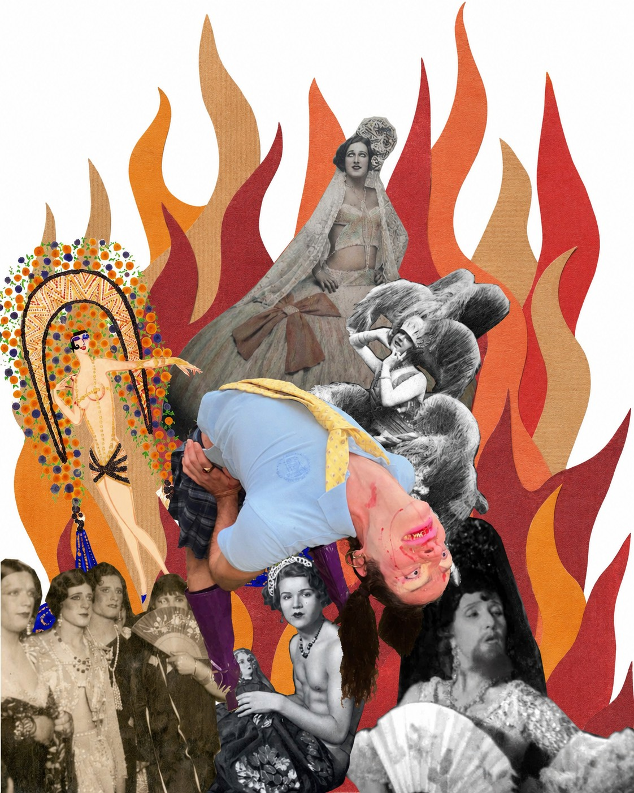

{#- Flyer «obertura de procés». Texts: <lang>.json. Formats: a5 (print PDF) and ig (1080×1350 JPG). Build: python3 flyers/invocacions-obertura/build.py [langs] -#}
<!doctype html>
<html lang="{{ lang }}"><head><meta charset="utf-8">
<title>{{ t.title }} — {{ t.kicker }} · Cia. Victoria Sickness</title>
<link rel="stylesheet" href="../../static/fonts/fonts.css">
<style>
{% if fmt == 'a5' %}@page { size: 148mm 210mm; margin: 0; }
html { font-size: 1.48mm; } .page { width: 148mm; height: 210mm; }
{% else %}html { font-size: 10.8px; } .page { width: 1080px; height: 1350px; }{% endif %}
:root { --ink:#120d11; --paper:#f6efe4; --lac:#e8004f; --bub:#ff8fc7;
  --serif:"Instrument Serif",serif; --sans:"Instrument Sans",sans-serif; --disp:"Bricolage Grotesque",sans-serif; }
* { box-sizing: border-box; margin: 0; }
body { -webkit-print-color-adjust: exact; print-color-adjust: exact; }
/* 1rem = 1/100 of the width */
.page { position: relative; overflow: hidden; background: var(--paper); color: var(--ink); display: flex; flex-direction: column; font-family: var(--sans); }
.head { position: relative; padding-top: 3.2rem; margin-bottom: -15rem; z-index: 3; display: grid; justify-items: center; gap: 1rem; text-align: center; }
.presenta { font: 600 1.7rem/1 var(--sans); letter-spacing: .32em; text-transform: uppercase; background: var(--paper); padding: 1rem 2rem; box-shadow: .5rem .6rem 0 rgb(18 13 17 / .85); }
.titlelab { background: var(--paper); padding: 1.2rem 3.6rem 2rem; box-shadow: .9rem 1rem 0 rgb(18 13 17 / .9); transform: rotate(-1.2deg); }
.kicker { font: italic 400 5rem/1 var(--serif); color: var(--lac); }
h1 { font: 800 11.4rem/.84 var(--disp); font-stretch: 75%; letter-spacing: -.035em; text-transform: uppercase; margin-top: .4rem; }
.sub { font: 700 1.8rem/1 var(--sans); letter-spacing: .24em; text-transform: uppercase; margin-top: 1.4rem; }
.art { flex: 1; min-height: 0; position: relative; margin: 0; }
.art img { width: 100%; height: 100%; object-fit: contain; object-position: 50% 50%; mix-blend-mode: multiply; display: block; }
.labels { position: relative; margin-top: -11rem; margin-bottom: 2rem; display: grid; justify-items: center; gap: 1.2rem; z-index: 3; }
.lab { display: inline-block; padding: 1.2rem 3rem 1.4rem; box-shadow: .8rem .9rem 0 rgb(18 13 17 / .9); }
.lab--date { background: var(--lac); color: var(--paper); font: 800 7.4rem/.9 var(--disp); font-stretch: 75%; text-transform: uppercase; letter-spacing: -.02em; transform: rotate(-2.2deg); }
.lab--date span { color: var(--ink); margin-left: 2.4rem; text-transform: none; }
.lab--place { background: var(--ink); color: var(--paper); font: italic 400 5.2rem/1 var(--serif); transform: rotate(1.4deg); }
.foot { position: relative; z-index: 2; padding: 2rem 0 4rem; margin-top: 0 !important; background: var(--paper); display: flex; justify-content: space-between; align-items: end; gap: 3rem; border-top: .45rem solid var(--ink); margin: 0 7rem; }
.foot .addr { font: 700 2.4rem/1.25 var(--sans); white-space: nowrap; }
.foot .addr small { display: block; font-weight: 500; font-size: 2.1rem; margin-top: .6rem; }
.foot .web { white-space: nowrap; display: flex; align-items: center; text-align: right; font: 800 3.4rem/1 var(--disp); font-stretch: 75%; text-transform: uppercase; }
.foot .web svg { width: 4.2rem; height: 4.2rem; display: inline-block; margin-left: 1.6rem; }
</style></head><body>
<section class="page">
  <div class="head">
    <p class="presenta">{{ t.presenta }}</p>
    <div class="titlelab"><p class="kicker">{{ t.kicker }}</p><h1>{{ t.title }}</h1><p class="sub">{{ t.sub }}</p></div>
  </div>
  <div class="art"></div>
  <div class="labels">
    <span class="lab lab--date">{{ t.date }}<span>{{ t.time }}</span></span>
    <span class="lab lab--place">{{ t.place }}</span>
  </div>
  <div class="foot">
    <p class="addr">{{ t.address }}<small>{{ t.info }}</small></p>
    <p class="web">victoriasickness.com<svg viewBox="0 0 24 24" aria-label="Instagram"><rect x="3" y="3" width="18" height="18" rx="5.2" fill="none" stroke="currentColor" stroke-width="2.2"/><circle cx="12" cy="12" r="4.1" fill="none" stroke="currentColor" stroke-width="2.2"/><circle cx="17.4" cy="6.6" r="1.3" fill="currentColor"/></svg></p>
  </div>
</section>
</body></html>
